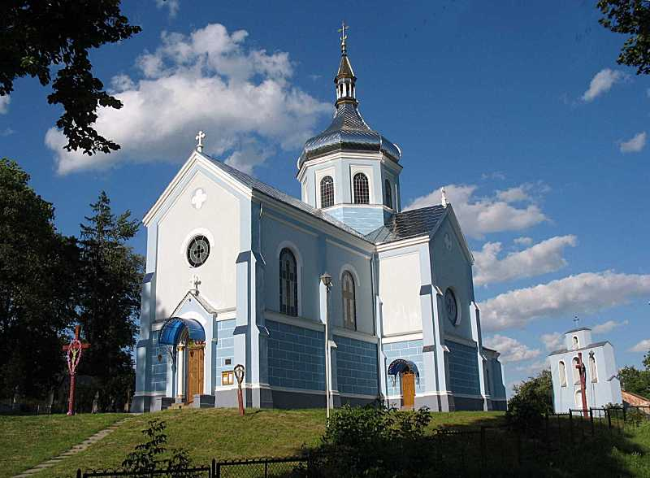

надсилайте нам перевірені новини на пошту і вони будуть розміщені тут

1759 p. у селі була збудована дерев’яна церква. У 1905-1906 pp. стараннями пароха о. Теодора Леонтовича зведено замість неї нову муровану споруду. Зведена будівничим Іваном Розмусом зі Львова за проектом львівського архітекта Крижановського, про що свідчив напис на вмурованій у вівтарі таблиці. Посвячена 22 червня 1924 р. митрополитом Андрієм Шеп-тицьким. У 1930-х pp. стінопис вівтаря, нави, бокових рамен, захристій і купола виконали артисти-малярі Михайло Осінчук та Павло Ковжун. Розташована на пагорбі в центрі села, при дорозі. Оточена старими липами. На північ від церкви розміщений сільський цвинтар. Мурована хрещата в плані однобанна споруда на високому мурованому з каменя цоколі. До квадратової в плані нави прилягають з півночі і півдня укорочені прямокутні бокові рамена, з заходу – прямокутний бабинець, а зі сходу – прямокутний вівтар з меншою гранчастою апсидою та двома прямокутними ризничками по боках. Наву вінчає грушаста баня з ажуровим ліхтарем і стіжком, посаджена на високий світловий восьмибічний барабан. Рамена хреста вкриті двосхилими причілковими дахами, завершеними на краях кам’яними хрестами. Апсида вкрита п’ятисхилим дахом. Тиньковані стіни членовані лопатками з невеликими контрфорсами і розділені підвіконною тягою ґзимсом на дві частини – нижню рустовану і верхню гладку, завершену профільованим ґзимсом. Площини стін ризниць не рустовані. Портал західного фасаду обрамований двома півколонами з корінфськими капітелями і архівольтом, в тимпані якого розміщене зображення св. арх. Михайла. На північний захід від церкви розташована дерев’яна стовпова дзвіниця з маківкою на місці сходження гребенів хрещатого даху. З заходу і сходу до неї прилягають невеликі прямокутні приміщення, вкриті односхилими дахами.
 Офіс Львівської громади с. Зашків вул. Є. Коновальця, 110А, 80375
Офіс Львівської громади с. Зашків вул. Є. Коновальця, 110А, 80375
+38 (032)297-57-95
 Facebook
Facebook
2022 рік .